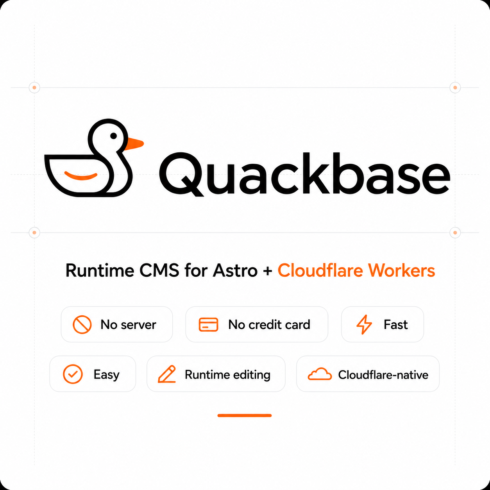

Getting Started
CoreUse the quickstart and deployment guides to move from repository to a working Cloudflare deployment with the admin dashboard online.

Guides for running a runtime CMS on Astro and Cloudflare, from deployment to media, captcha, email, and backup workflows.

Use the quickstart and deployment guides to move from repository to a working Cloudflare deployment with the admin dashboard online.
Cloudflare Worker, D1, R2, cache, and recovery notes in one place.
Media, captcha, and email settings are documented with step-by-step flows, field tables, and implementation notes.
Start with setup, then architecture, then admin configuration.
Read Quickstart and Deployment to understand the minimum path to first launch.
Use Architecture and Database to understand the runtime model.
The documentation site remains static and GitHub Pages friendly. It uses plain HTML, CSS, and JavaScript only, with Mermaid loaded from a CDN where diagrams are needed.
Each page now emphasizes reusable UI patterns such as field tables, structured steps, callout boxes, cards, tabs, and architecture flows instead of long raw text blocks.